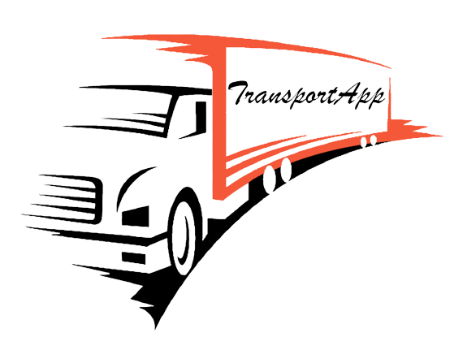

<ion-app>
  <ion-menu side="start" menuId="first" contentId="menu" class="my-custom-menu">
    <ion-header>
      <ion-toolbar>
          
      </ion-toolbar>
    </ion-header>

    <ion-content >
      <ion-list>  
        
          <ion-item lines="none" [routerLink]="['./micuenta']">
            <ion-icon name="person-circle-outline" slot="start" size="small"></ion-icon>
            Cuenta
          </ion-item>
          <ion-item lines="none" [routerLink]="['/cargas']">
            <ion-icon name="person" slot="start" size="small"></ion-icon>
            Cargas
          </ion-item>

          <ion-item lines="none" [routerLink]="['/vehiculos']">
            <ion-icon name="car" slot="start" size="small"></ion-icon>
            Vehiculo
          </ion-item>
        
          <ion-item lines="none" [routerLink]="['/viajes']">
            <ion-icon name="earth-outline"slot="start" size="small"></ion-icon>
            
            Viajes
          </ion-item>
          <ion-item lines="none" [routerLink]="['./pagina-principal']">
            <ion-icon name="exit-outline" slot="start" size="small"></ion-icon>
            
            Cerrar Sesion
          </ion-item>
        
        </ion-list>
    </ion-content>
  </ion-menu>
  <!-- <ion-router-outlet id="menu"></ion-router-outlet> -->
  <ion-router-outlet></ion-router-outlet>
</ion-app>